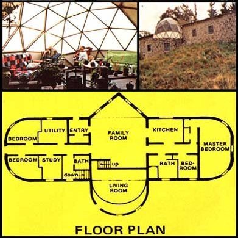

Building Jack Henstridge's spectacular house was as easy as stacking cordwood . . . as these photos show. Two rows of mortar were laid down along the edge of the structure's concrete slab floor (represented here by a piece of 2 X 9 lumber), and chunks of wood were then simply pushed down into the ""mud"". More of the concrete mix was next packed around the ends of the first layer of short crosswise ""logs"", and a second tier of the rounds was then positioned snugly in that mud. Chunks of styrofoam (salvaged at no cost from a local dump) were placed between the inside and outside ""walls"" of concrete as insulation, but Jack says that crumpled newspaper or even dead-air space would have worked nearly as well.